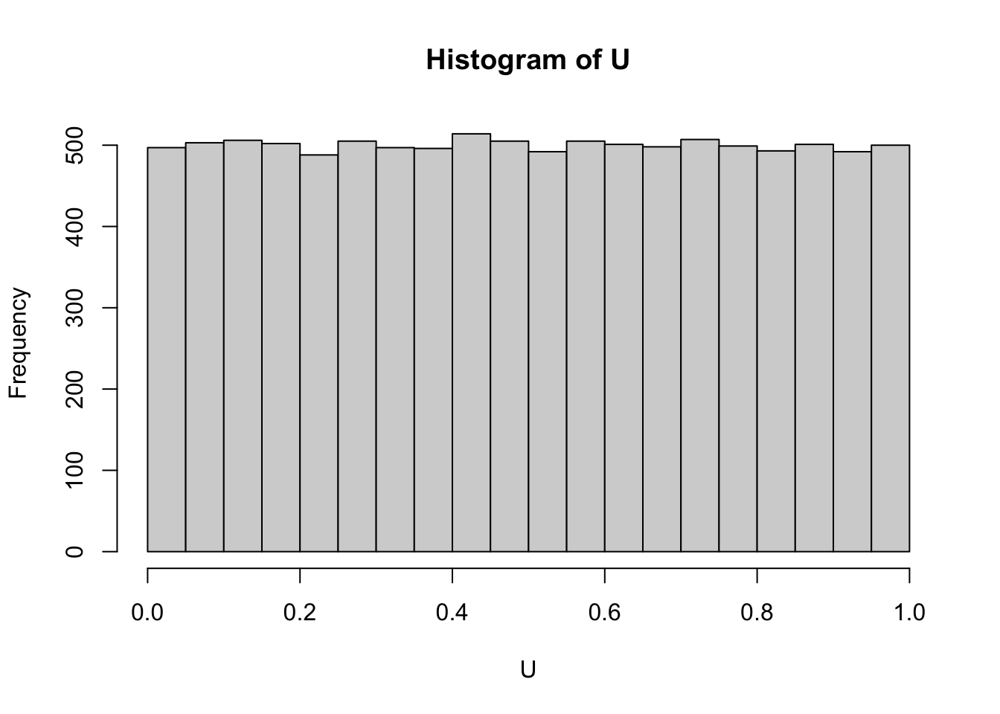

[1] 0.71656713 0.24954631 0.92196522 0.57801828 0.41914409 0.09278385
[7] 0.95882139 0.91727984 0.77213185 0.80667833 0.74867192 0.77157092
[13] 0.71019896 0.15422180 0.52614907 0.49764081 0.59421916 0.20569505
[19] 0.37954928 0.28247600Multiplicative Congruential Random Number Generator (MCRNG)
(from: Braun and Murdoch’s book “A first course in statistical programming with R” 2nd edition (2016): Section 5.2)
Monte Carlo Simulation
to approximate the mean \(\mu = E(x)\): generate m independent and identically distributed (i.i.d.) values of X and use the sample mean (\(\bar{X} = \frac{\Sigma X_i}{m}\)) : good approximation for large m (law of large numbers) the distribution of \(\bar{X}\) can be approximated by a normal distribution the mean \(\mu\) and variance \(\sigma ^2 /m\) -> central limit theorem
A multiplicative congruential random number generator (MCRNG) is an algorithm that can be used to draw numbers from \(X \sim U(0, 1)\)
m large integer, b is another integer where m>b \(x_0\) integer between 1 and m <- seed
formula \(x_n = bx_{n-1}\)(mod m), $ u_n = x_n / m$
- choose m so that it is not divizable by b
ex 4
[1] 0.49605698 0.08148008 0.28544716- Compare your results with the true mean, variance, and standard deviation
mean = median of uniform distribution is 1/2(a+b) variance: \(1/12(b-a)^2\) = 1/12 sd = sqrt(var)
[1] 0.5[1] 0.08333333[1] 0.2886751answer the same to 2d.p
ex 5
5 Simulate 10000 independent observations on a uniformly distributed random variable on the interval [3.7, 5.8]. (a) Estimate the mean, variance, and standard deviation of such a uniform random variable and compare your estimates with the true values.
[1] 4.75[1] 4.744036[1] 0.3675[1] 0.3401287[1] 0.6062178[1] 0.5832055- Estimate the probability that such a random variable is greater than 4.0. Compare with the true value.
[1] 0.888[1] 0.8571429Steps
draw a sample \(x\) with replacement from a discrete uniform with \(\Omega = \{1, 2, ..., k\}\) where \(k \to \infty\), then set \(u = \frac{x}{k}\)
obvious issue: \(k \to \infty\)? (\(\Rightarrow\) choose \(k\) based on desired level of accuracy)
Lecture 1 practical

The pseudo-randomly generated numbers u1, . . . , un are approximately evenly distributed over the interval [0, 1]. Also, the sample mean and sample variance of the generated numbers are very close to the theoretical mean and variance of a U(0, 1)-distributed random variable, which are 1/2 and 1 12 = 0.083, respectively. This suggests that the MCRNG algorithm that we implemented is doing a good job at generating U(0, 1)-distributed random numbers.
Simulation of other random variables
from book
Bernoulli random variables
Write an R function which simulates the outcomes of a student guessing at a True–False test consisting of n questions. (a) Use the function to simulate one student guessing the answers to a test with 10 questions; calculate the number of correct answers for this student. (b) Simulate the number of correct answers for a student who guesses at a test with 1000 questions.
[1] 3[1] 4853 Write an R function which simulates 500 light bulbs, each of which has probability 0.99 of working. Using simulation, estimate the expected value and variance of the random variable X, which is 1 if the light bulb works and 0 if the light bulb does not work. What are the theoretical values?
[1] 495[1] 0.99[1] 0.00991984theoretical values: expectation per bulb = 0.99 and variance is = pq (prob of success prop of fail) = 0.99*0.01
Binomial random variables
Compute the probability of getting four heads in six tosses of a fair coin
[1] 0.2343751 Suppose the proportion defective is 0.15 for a manufacturing operation. Simulate the number of defectives for each hour of a 24-hour period, assuming 25 units are produced each hour. Check whether the number of defectives ever exceeds 5. Repeat, assuming p = 0.2 and then p = 0.25
[1] TRUE[1] TRUE[1] TRUEUse simulation to estimate the mean and variance of a binomial random variable with n = 18 and p = 0.76. Compare with the theoretical values.
[1] 13.689[1] 3.059338theoretical
[1] 13.68[1] 3.2832The following function simulates binomial pseudorandom numbers by summing up the corresponding independent Bernoulli random variables.